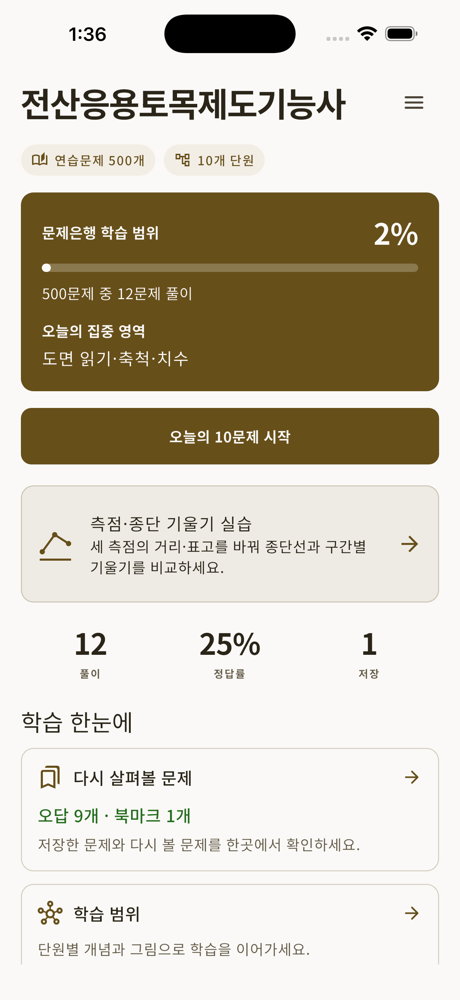
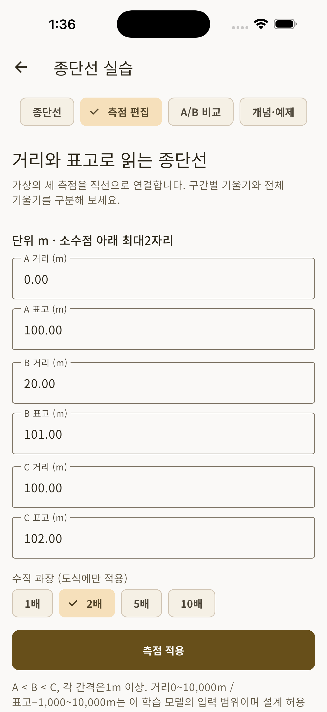
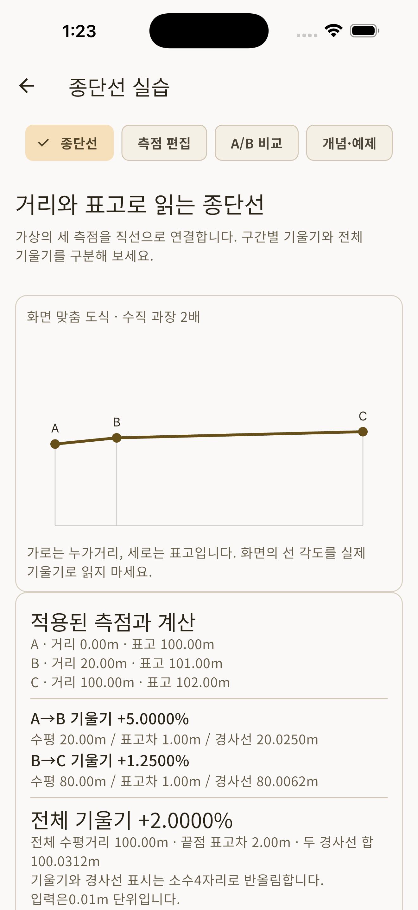

CIVIL DRAFTING / KOREAN STUDY
Read the profile behind the numbers.
An independent Korean-language study app for the Korean Computer-Aided Civil Drafting Craftsman exam. Explore selected fundamentals and original practice.
Preparing for release
App UI, questions and explanations: Korean
Explore a concept example ↓Read both segment grades.
| Station | Horizontal cumulative distance (m) | Elevation (m) |
|---|
These values use the three virtual stations below. The new in-app longitudinal-profile workshop is being prepared for validation.
Start and end elevations can hide a rise and fall between them. With unequal segment lengths, the simple mean of the two percentages is not the overall grade.
ON-DEVICE LEARNING
Study stored on your device
We are preparing a paid-download app with included questions, explanations, basic diagrams, concepts, review and study history available offline after installation. No subscription, additional in-app unlock purchase or daily free-question limit is required.
A bounded learning tool
Selected civil drawing, structural fundamentals and calculations under stated assumptions. No CAD execution, vertical curves, terrain or coordinate correction, current KS/KDS design compliance, official practical performance or grading, complete exam reproduction or pass guarantee.
Official exam information ↗APP PREVIEW / KOREAN INTERFACE
A look inside the app
iPhone Simulator · iOS 26.5 · submission candidate 0.1.0(8). The app interface and question bank are in Korean. Screens show synthetic study records. These are actual app captures, separate from the web example. Release testing is ongoing.


Review 500 questions across 10 chapters and your local study and bookmark records.


Enter unequal segment lengths and choose vertical exaggeration.


Distinguish +5% and +1.25% for the 20m and 80m segments from the overall +2%.